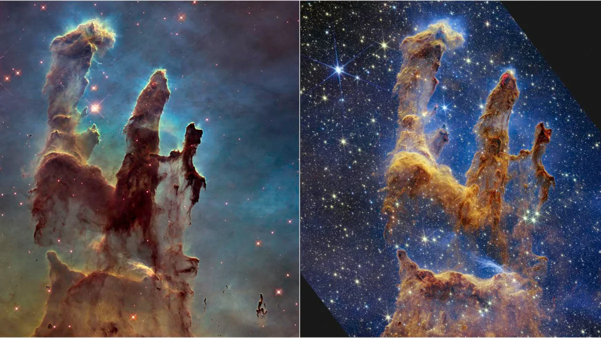

Esto es un subtítulo de la página:
Esto es una descripción de la página web
Esto es una pequeña descripción de blog
Esto es una descripción de la página web
Ya no se me ocurre qué poner, pero ahí va otra imagen del universo:

| Estrellas | Mazorcas de melocotón | Secuencia de Fibonacci |
|---|---|---|
| 20 | 27 | 1 |
| 25 | 14 | 1 |
| 27 | 43 | 2 |
| 72 | 51 | 3 |
| 23 | 85 | 5 |